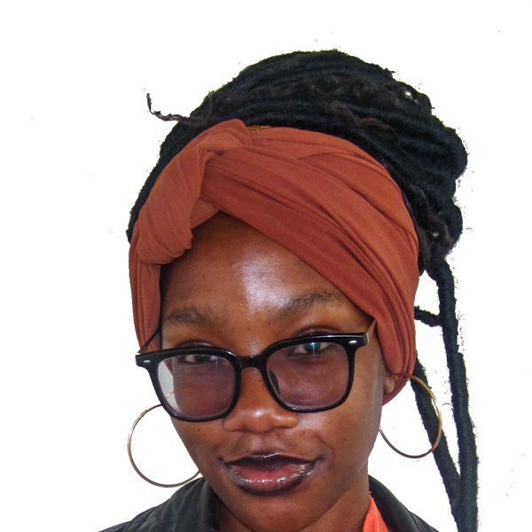
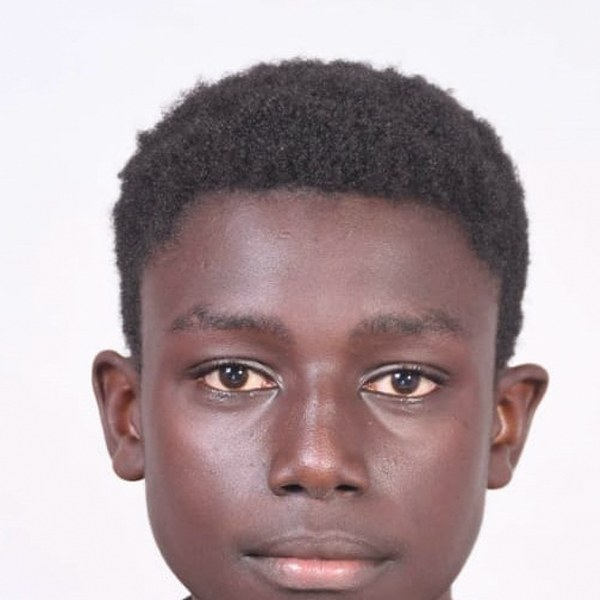
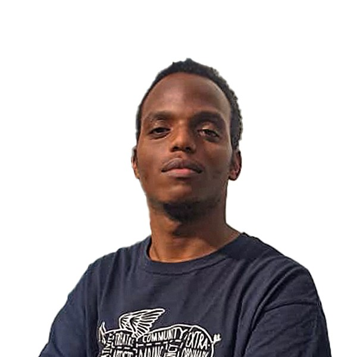
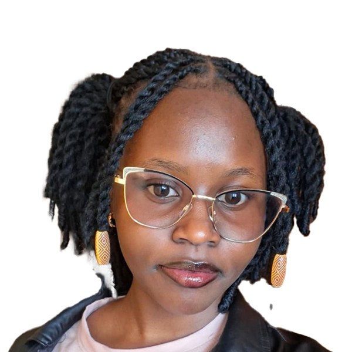

President
Architecture Chapter Council.
The council that runs the architecture chapter of ASA TUK, organised into dockets.
Executive Docket
The top leadership team of ASA TUK.
Joy Too

Secretary GeneralLeasebeth Wakla
Mitchelle Jepkurgat
Raphael Ndombi
Organizing & Events Docket
Plans and runs ASA TUK activities and events.
TBC
Organizing SecretaryName to be confirmed
Dennis Mwendwa
Samuel Kimanzi
TBC
Assistant Events SecretaryName to be confirmed
Academic & Professional Affairs Docket
Academic activities, professional development and academic visits.
TBC
Academic & Professional Affairs CoordinatorName to be confirmed
TBC
Assistant Academic & Professional Affairs CoordinatorName to be confirmed
TBC
Cohort RepresentativesNames to be confirmed
PR & Communications Committee
Public relations, social media and merchandise.
Public Relations
Alex Muthui

Assistant Public Relations SecretaryEnock Tonui
Social Media

Social Media StrategistFabian Maina
TBC
Assistant Social Media StrategistName to be confirmed
Merchandise
TBC
Merchandise SecretaryName to be confirmed

Assistant Merchandise SecretaryJuliet Jepkosgei
Urban & Regional Planning Chapter Council.
The council that runs the urban & regional planning chapter of ASA TUK.
TBC
PresidentName to be confirmed
TBC
Vice PresidentName to be confirmed
TBC
Secretary GeneralName to be confirmed
TBC
Assistant Secretary GeneralName to be confirmed
TBC
Treasurer